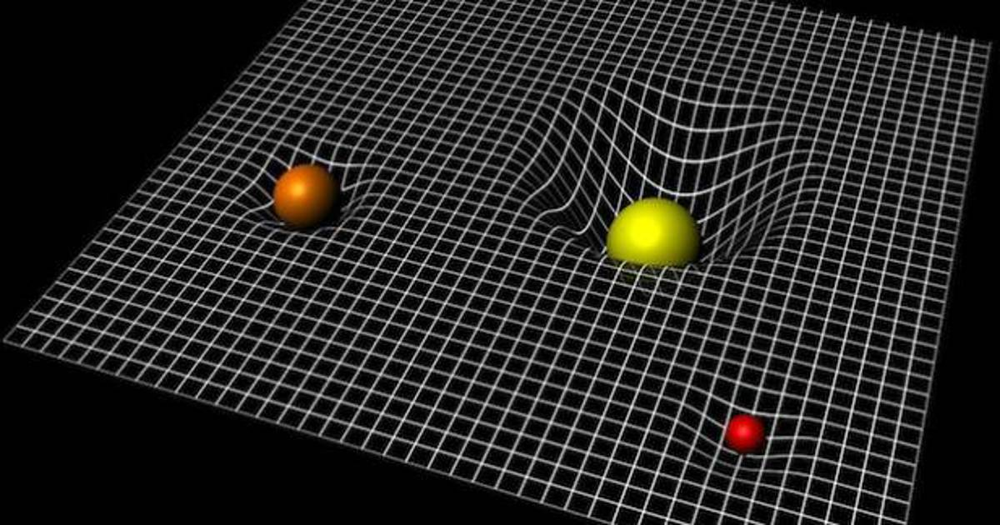
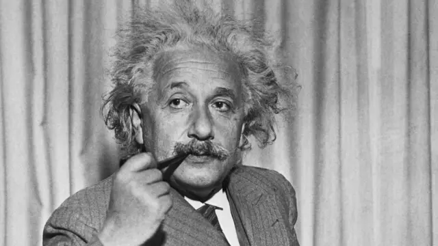

Descubre sobre la teoria de la relatividad
Bienvenido a THEORY RELATIVE, una página dedicada a conocer la Teoría de la Relatividad de Albert Einstein. Aquí encontrarás información clara y sencilla sobre su origen, sus principios más importantes, su historia y el impacto que ha tenido en la ciencia y en nuestra comprensión del universo.
contexto de la teoria

albert Einstein
Albert Einstein (1879–1955) fue un físico teórico de origen alemán, considerado uno de los científicos más importantes de la historia. En 1905 publicó la Teoría de la Relatividad Especial y en 1915 presentó la Teoría de la Relatividad General, revolucionando la comprensión del espacio, el tiempo y la gravedad.

¿que es?
a Teoría de la Relatividad es una teoría científica desarrollada por Albert Einstein que explica cómo funcionan el espacio, el tiempo, la gravedad y el movimiento en el universo. Está formada por la Relatividad Especial (1905), que estudia el movimiento de los cuerpos a grandes velocidades, y la Relatividad General (1915), que explica la gravedad como una curvatura del espacio-tiempo causada por la masa de los objetos. Gracias a esta teoría se han logrado grandes avances en la física moderna, la astronomía y tecnologías como el sistema GPS.

¿que explica?
Explica que el tiempo puede transcurrir de manera diferente dependiendo de la velocidad y que ademas el tiempo es relativo.